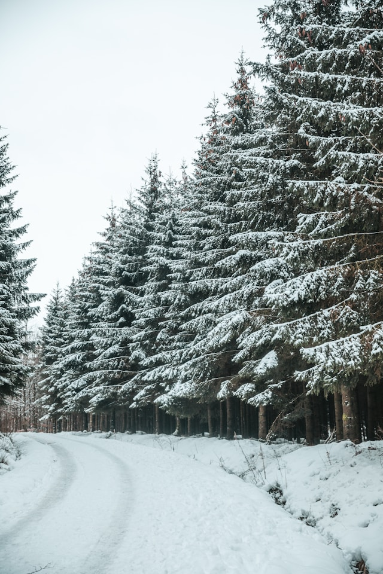
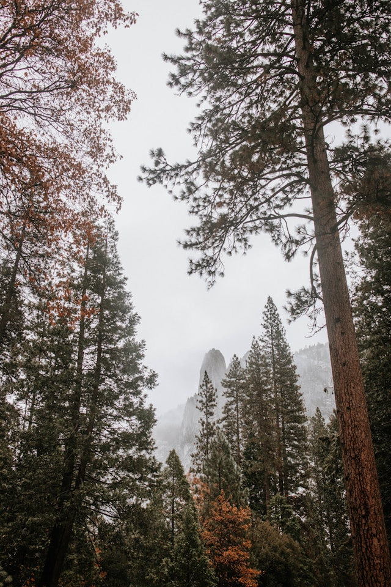
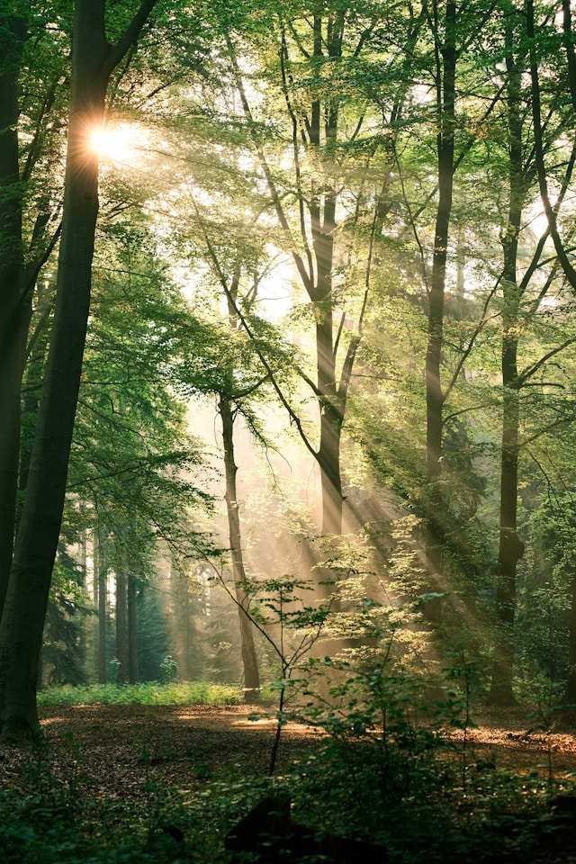

.jpg)


European nature is not in a good state, and it has shown few signs of improvement over the past years.
According to European Environment Agency’s (EEA) briefing, published today, restoration efforts and
better ongoing management of ecosystems are needed to safeguard a range of benefits delivered by a
healthy nature — to people’s health, food security and effective climate action.
The importance of restoring nature in Europe
Impacts of air pollution on ecosystems
EEA Signals 2021: Europe’s nature
State of nature in the EU
Management effectiveness in the EU's Natura 2000 network of protected areas
Woody landscape features on agricultural land in Europe
Common bird index in Europe
Ecological status of surface waters in Europe
Conservation status of species under the EU Habitats Directive
Nationally designated terrestrial protected areas in Europe
European protected sites
Natura 2000 data viewer
Emerald data viewer
Natura 2000 data viewer
Emerald data viewer
What is biodiversity and why is it important to preserve it?
What is the status of biodiversity in my country?
How is the EU helping to protect natural areas and biodiversity?
How can we protect our marine environment?
Solutions for restoring Europe’s agricultural ecosystems
This EEA briefing presents evidence-based examples of key options available to farmers to help restore Europe’s ecosystems and enhance the ability of the agricultural sector to cope with increasing climate change impacts like droughts and floods as well as boosting productivity. The study says introducing some key agricultural practices can prove to be a win-win for both farmers and local nature, delivering better resilience and restoring local ecosystems like grasslands, hedgerows or creeks.
This EEA briefing presents evidence-based examples of key options available to farmers to help restore Europe’s ecosystems and enhance the ability of the agricultural sector to cope with increasing climate change impacts like droughts and floods as well as boosting productivity. The study says introducing some key agricultural practices can prove to be a win-win for both farmers and local nature, delivering better resilience and restoring local ecosystems like grasslands, hedgerows or creeks.